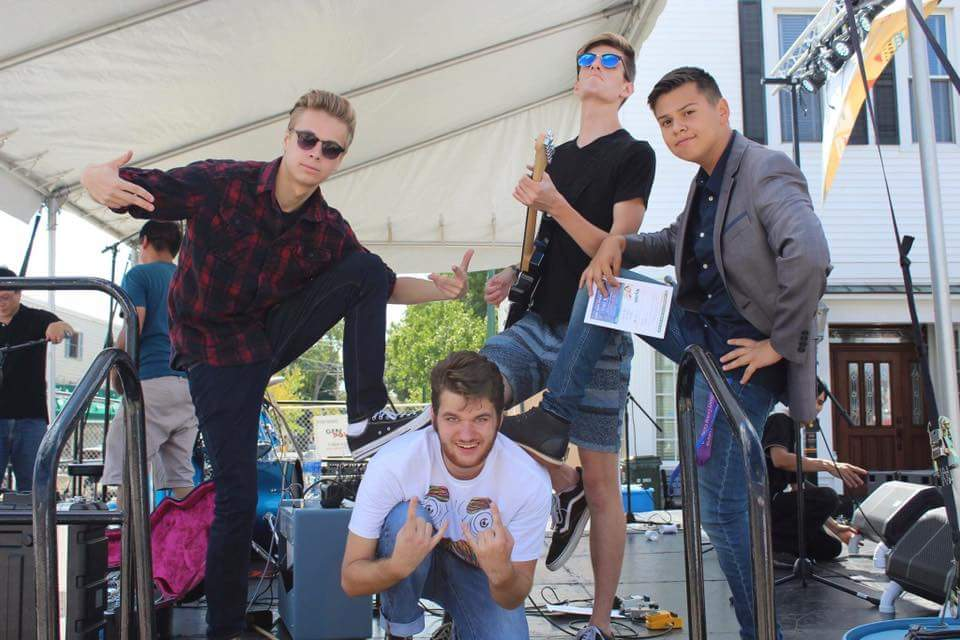

Tetrad was a band I started with my friends right before my senior year of high school. I played guitar and did back up vocals, as well as writing the guitar and bass parts while helping write vocal lines and lyrics on occasion.
We did relatively well, winning the battle of the bands for Cary, IL and getting second at regionals with an opportunity to go to state. Unfortunately, the band isn't around anymore, but we did record some music on our own as well as in a studio. We finished an EP called "It Came From the Basement!" since we wrote almost all of the music in our drummer's basement. Our music can be found by clicking on the links below.
The choir program at my old High School, Cary Grove, had a yearly competition among all of the classes similar to American Idol named CG Idol. Members of each class would perform in a group or solo in front of the rest of the class. One of the groups I played guitar for won first place overall, giving us the opportunity to record our act at Waysound Studios for free, with the help of Justin LeBreck.
I worked with Corey Barlow, Colleen Kaveney, and Colin Durlacher to preform this cover of Like I'm Gonna Lose You, originally performed by John Legend and Meghan Trainor.
1. Like I'm Gonna Lose You